D&C 的工作原理:
D&C 并非可用于解决问题的算法，而是一种解决问题的思路。
来看一个例子：
给定一个数字数组：
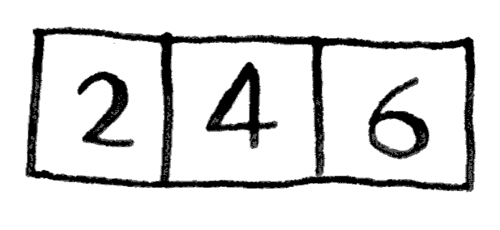
你需要将这些数字相加，并返回结果。但如何使用递归函数来完成这种任务呢?
第一步： 找出基线条件。最简单的数组什么样呢?请想想这个问题，再接着往下读。如果数 6 组不包含任何元素或只包含一个元素，计算总和将非常容易。
因此这就是基线条件。
第二步： 每次递归调用都必须离空数组更近一步。如何缩小问题的规模呢?下面是一种办法。
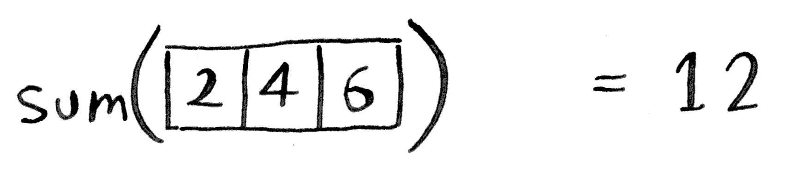
这与下面的版本等效：
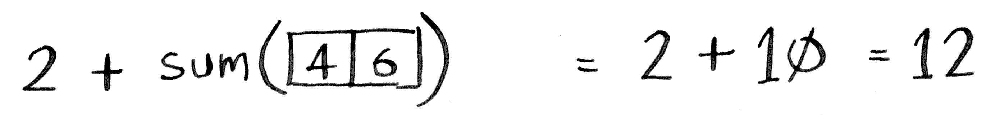
这两个版本的结果都为 12，但在第二个版本中，给函数 sum 传递的数组更短。换言之，这缩小了问题的规模!
函数 sum 的工作原理类似于下面这样：
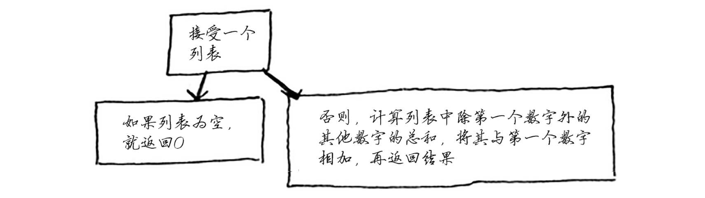
这个函数的运行过程如下：
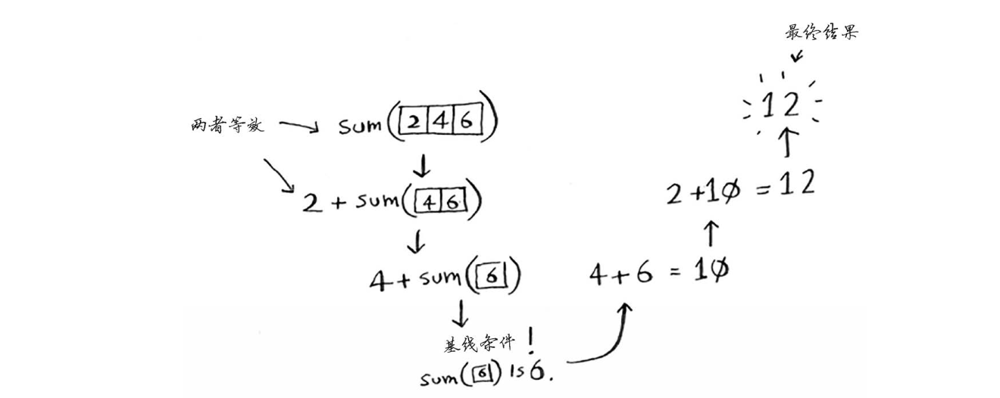
别忘了，递归记录了状态：
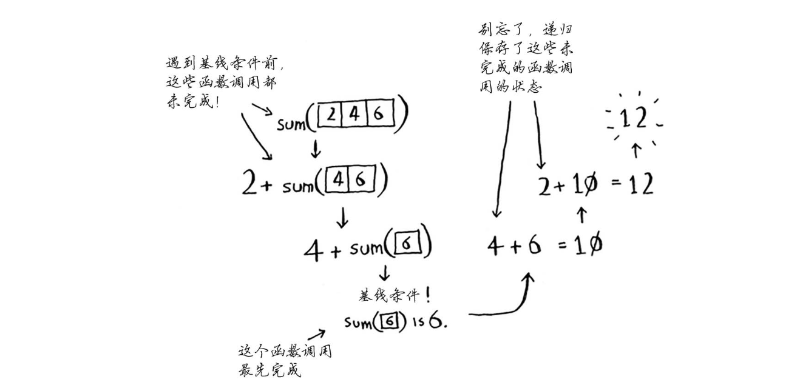
提示：
编写涉及数组的递归函数时，基线条件通常是数组为空或只包含一个元素。陷入困境时，请检查基线条件是不是这样的。
快速排序是一种常用的排序算法，比选择排序快得多。快速排序也使用了 D&C。
下面来使用快速排序对数组进行排序。对排序算法来说，最简单的数组什么样呢?还记得前一节的“提示”吗？就是根本不需要排序的数组。
因此，基线条件为数组为空或只包含一个元素。在这种情况下，只需原样返回数组——根本就不用排序。
def quicksort(array): if len(array) < 2: return array
我们来看看更长的数组。对包含两个元素的数组进行排序也很容易。
包含三个元素的数组呢?
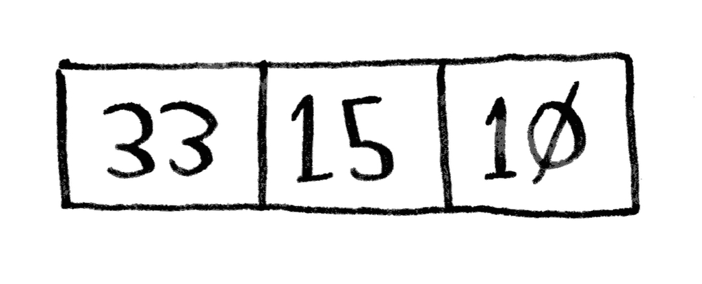
别忘了，你要使用D&C，因此需要将数组分解，直到满足基线条件。下面介绍快速排序的工作原理。首先，从数组中选择一个元素，这个元素被称为基准值(pivot)。
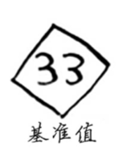
稍后再介绍如何选择合适的基准值。我们暂时将数组的第一个元素用作基准值。
接下来，找出比基准值小的元素以及比基准值大的元素。
这被称为分区(partitioning)。现在你有:
这里只是进行了分区，得到的两个子数组是无序的。但如果这两个数组是有序的，对整个数组进行排序将非常容易。
如果子数组是有序的，就可以像下面这样合并得到一个有序的数组:左边的数组 + 基准值 + 右边的数组。在这里，就是 [10, 15] + [33] + []，结果为有序数组 [10, 15, 33]。
如何对子数组进行排序呢？对于包含两个元素的数组(左边的子数组)以及空数组(右边的子数组)，快速排序知道如何将它们排序，因此只要对这两个子数组进行快速排序，再合并结果，就能得到一个有序数组!
quicksort([15, 10]) + [33] + qiicksort([]) > [10, 15, 33]
不管将哪个元素用作基准值，这都管用。假设你将 15 用作基准值。
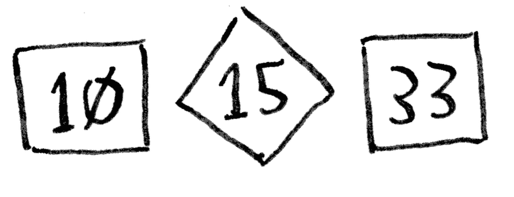
这个子数组都只有一个元素，而你知道如何对这些数组进行排序。现在你就知道如何对包含三个元素的数组进行排序了，步骤如下：
包含四个元素的数组呢?
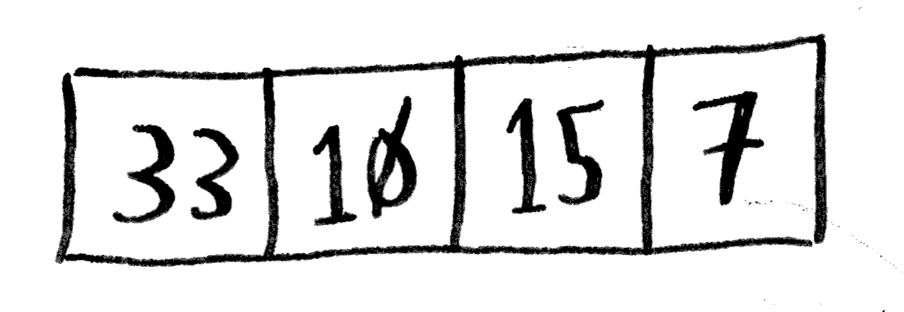
假设你也将 33 用作基准值。
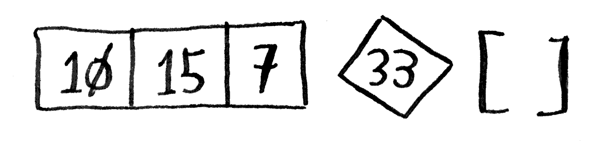
左边的子数组包含三个元素，而你知道如何对包含三个元素的数组进行排序:对其递归地调用快速排序。
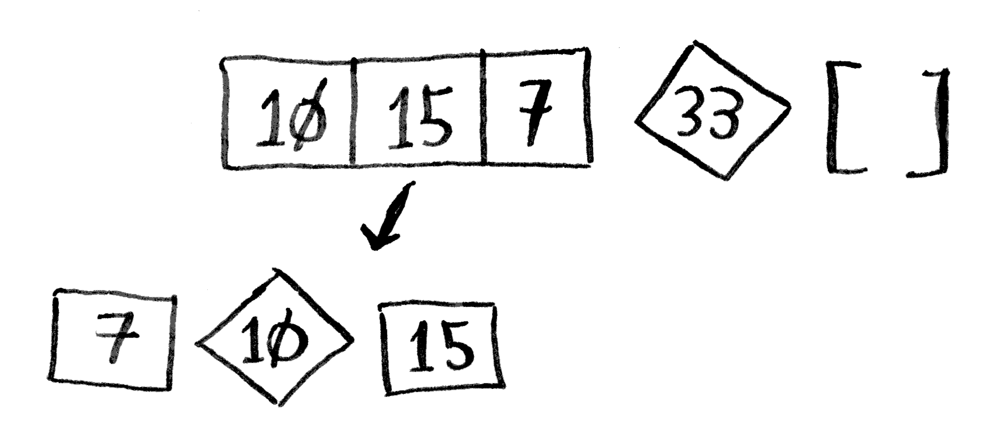
因此你能够对包含四个元素的数组进行排序。如果能够对包含四个元素的数组进行排序，就能对包含五个元素的数组进行排序。为什么呢？假设有下面这样一个包含五个元素的数组。
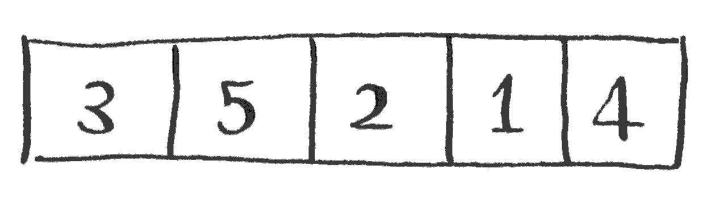
根据选择的基准值，对这个数组进行分区的各种可能方式如下。
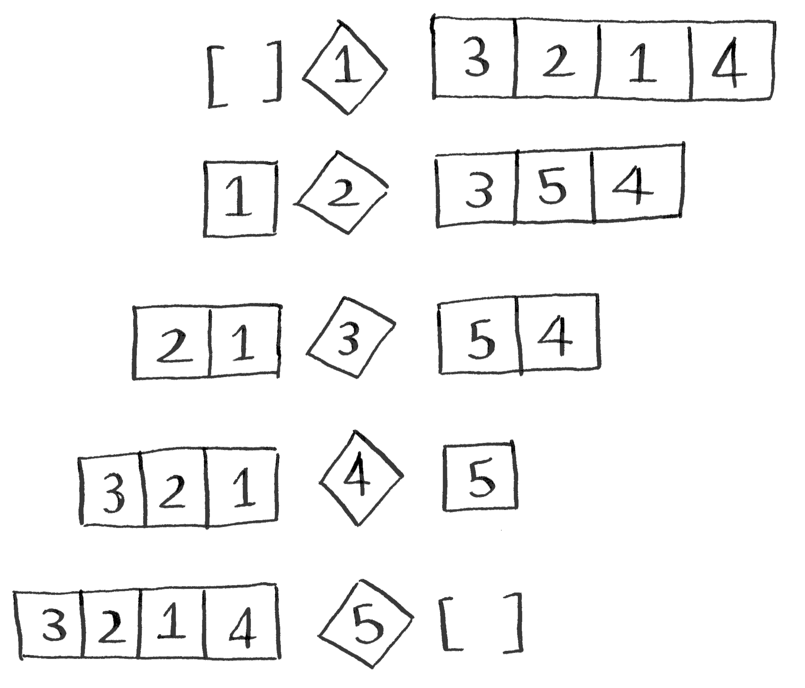
注意，这些子数组包含的元素数都在 0~4 内，而你已经知道如何使用快速排序对包含 0~4 个元素的数组进行排序!因此，不管如何选择基准值，你都可对划分得到的两个子数组递归地进行快速排序。
例如，假设你将 3 用作基准值，可对得到的子数组进行快速排序。
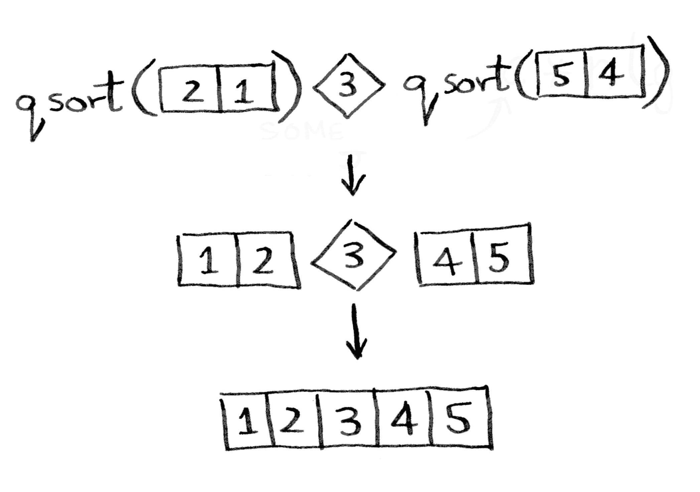
将子数组排序后，将它们合并，得到一个有序数组。即便你将 5 用作基准值，这也可行。
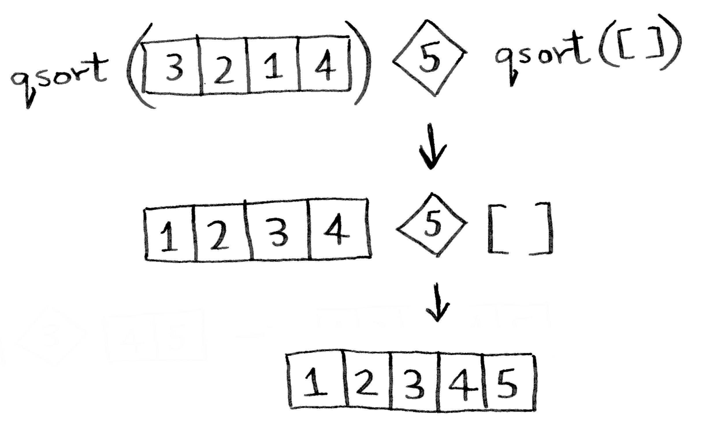
将任何元素用作基准值都可行，因此你能够对包含五个元素的数组进行排序。同理，你能够对包含六个元素的数组进行排序，以此类推。
归纳证明
刚才你大致见识了归纳证明!归纳证明是一种证明算法行之有效的方式，它分两步:基线条件和归纳条件。是不是有点似曾相识的感觉?例如，假设我要证明我能爬到梯子的最上面。 递归条件是这样的:如果我站在一个横档上，就能将脚放到下一个横档上。换言之，如果我站在第二个横档上，就能爬到第三个横档。这就是归纳条件。而基线条件是这样的，即我已经站在第一个横档上。因此，通过每次爬一个横档，我就能爬到梯子最顶端。
对于快速排序，可使用类似的推理。在基线条件中，我证明这种算法对空数组或包含一个元素的数组管用。在归纳条件中，我证明如果快速排序对包含一个元素的数组管用，对包含两个元素的数组也将管用；如果它对包含两个元素的数组管用，对包含三个元素的数组也将管用，以此类推。因此，我可以说，快速排序对任何长度的数组都管用。这里不再深入讨论归纳证明，但它很有趣，并与 D&C 协同发挥作用。
下面是快速排序的代码：
def quicksort(array): if len(array) < 2: return array else: pivot = array[0] less = [i for i in array[1:] if i <= pivot] greater = [i for i in array[1:] if i >= pivot] return quicksort(less) + [pivot] + quicksort(greater) print(quicksort([10, 5, 2, 3, 100, 2000 ]))
运行结果：
[2, 3, 5, 10, 100, 2000]
快速排序的独特之处在于，其速度取决于选择的基准值。
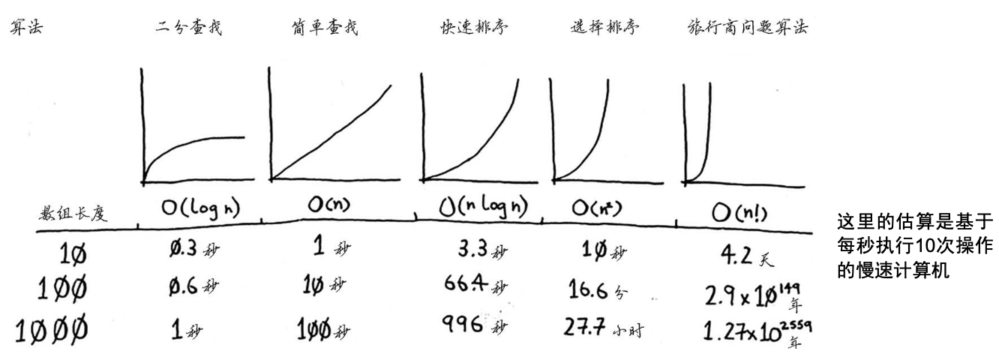
上述图表中的时间是基于每秒执行 10 次操作计算得到的。这些数据并不准确，这里提供它们只是想让你对这些运行时间的差别有大致认识。实际上，计算机每秒执行的操作远不止 10 次。
对于每种运行时间，本书还列出了相关的算法。来看看第 2 章介绍的选择排序，其运行时间为 ，速度非常慢。
还有一种名为合并排序(merge sort)的排序算法，其运行时间为 ，比选择排序快得多！快速排序的情况比较棘手，在最糟情况下，其运行时间为 。
与选择排序一样慢！但这是最糟情况。在平均情况下，快速排序的运行时间为 。你可能会有如下疑问：
假设有下面这样打印列表中每个元素的简单函数：
def print_item(list): for item in list: print(item)
这个函数遍历列表中的每个元素并将其打印出来。它迭代整个列表一次，因此运行时间为 。现在假设你对这个函数进行修改，使其在打印每个元素前都休眠 1 秒钟。
def print_item(list): for item in list: sleep(1) print(item)
它在打印每个元素前都暂停 1 秒钟。假设你使用这两个函数来打印一个包含 5 个元素的列表。
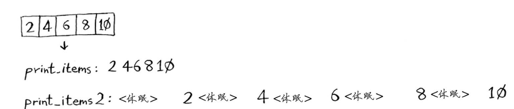
这两个函数都迭代整个列表一次，因此它们的运行时间都为 。你认为哪个函数的速度更快呢?我认为 print_items 要快得多，因为它没有在每次打印元素前都暂停 1 秒钟。因此，虽然使用大O表示法表示时，这两 个函数的速度相同，但实际上 print_items 的速度更快。在大O表示法 中，n 实际上指的是这样的：
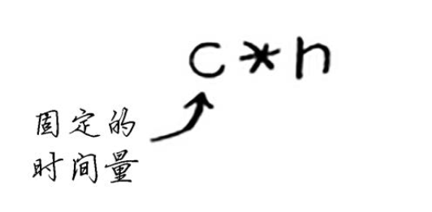
c 是算法所需的固定时间量，被称为常量。例如，print_ items 所需的时间可能是 10毫秒 * n，而 print_items2 所需的时间为 1秒 * n。
通常不考虑这个常量，因为如果两种算法的大O运行时间不同，这种常量将无关紧要。就拿二分查找和简单查找来举例说明。假设这两种算法的运行时间包含如下常量。
你可能认为，简单查找的常量为 10 毫秒，而二分查找的常量为 1 秒，因此简单查找的速度要快得多。现在假设你要在包含 40 亿个元素的列表中查找，所需时间将如下。
正如你看到的，二分查找的速度还是快得多，常量根本没有什么影响。
但有时候，常量的影响可能很大，对快速查找和合并查找来说就是如此。快速查找的常量比 合并查找小，因此如果它们的运行时间都为 ，快速查找的速度将更快。实际上，快速查找的速度确实更快，因为相对于遇上最糟情况，它遇上平均情况的可能性要大得多。
这里要告诉你的是，最佳情况也是平均情况（对快速排序算法来说）。只要你每次都随机地选择一个数组元素作为基准值，快速排序的平均运行时间就将为 。快速排序是最快的排序算法之一，也是 D&C 典范。